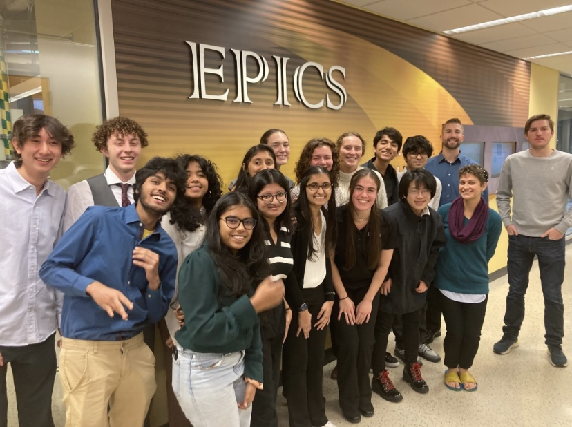
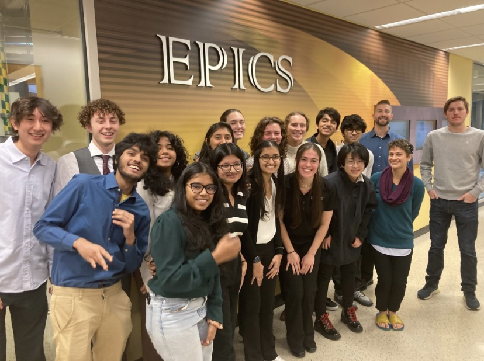

Problem Objective Statement: To create an ergonomic and cost-effective Bullock Driven Tractor that can efficiently lift farming attachments to aid rural farmers with cultivating crops in India. Our team from Purdue is working with IIT Delhi's RuTAG towards the common goal of improving the standard of living of rural farmers and villagers through engineering.
Community Partner: RuTAG (Rural Technology Action Group) at IIT Delhi, which creates technologies for rural development and identifies the technological needs of different regions in India.
Stakeholders: RuTAG at IIT Delhi, the farming community (and their bullocks), and Purdue University’s EPICS program.
Project Scope: Improve the RuTAG prototype by enhancing ergonomics for both rider and bullock, creating cost-effective and multi-functional farming applications, and ensuring the design is simple and realistic for rural Indian farmers. Electrically powered tractors are excluded.
Outcomes/Deliverables: The deliverables include the Delivery Design Document, User Manual, and Manufacturing Document (CAD models and drawings), all delivered digitally.
Project Use Context: The tractor is primarily for farmers in northwestern India to plow soil with spike attachments. It must endure outdoor storage and environmental wear, be safe for farmers and bystanders (especially children), be affordable, and account for material/resource limitations in rural areas.
User Needs and Specifications:
- IIT Delhi: Complete prototype with 3D CAD models and drawings.
- Farmers: Ergonomic lifting system (lift 60–70kg), reduced bullock strain, affordability (under Rs. 25,000), versatile terrain handling, easy operation and maintenance, long-lasting (5–7 years), and adaptable for different crops (depth control).
- Purdue: Ensure future collaboration with IIT Delhi through effective design delivery and communication.
- Team Advisor: Jorge Martinez – martinezj@purdue.edu
- EPICS Contacts:
- EPICS at Purdue University – epics@purdue.edu
- EPICS India Team – epics-india@ecn.purdue.edu

.png)


 
